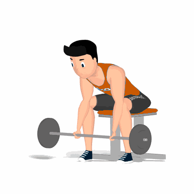

Rosca Concentrada com Barra

Exercício para fortalecimento e hipertrofia dos bíceps, com enfoque aos músculos bíceps braquiais. Pode ser executado e apoiado sobre uma prancha ou a nível avançado, sendo executado sem a necessidade de apoio.
Ficha Técnica
Tipo: Musculação
Grupo Muscular: Bíceps
Aparelho: Nenhum
Músculos: Nenhum
Como realizar
- Utilize uma barra, sente na extremidade de uma prancha, pernas afastadas;
- Realize a pegada em supinação, joelhos flexionados e pés firmes ao chão, apoie os cotovelos na extremidade da prancha;
- Cabeça e costas alinhadas, segure o peso mantendo os cotovelos estendidos;
- Suba o peso flexionando os cotovelos, realizando a contração máxima dos músculos dos bíceps;
- Eleve a barra a altura do peitoral, retorne à posição inicial e repita os movimentos.
 RC STORE
RC STORE